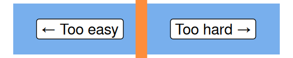

"hello world"[1] "hello world"
KIND learning network training materials by KIND learning network is licensed under CC BY-SA 4.0





demo(image) at the > prompt and press enter
"hello world"[1] "hello world"


Ctrl + Enter to run your script"hello world"[1] "hello world"# variable
# assignment operator
hw <- "hello world"
hw[1] "hello world"# R is case sensitive
# R runs from top to bottom - you can't use an object until you've made it
try(HW) # a way of running broken code and capturing the error messages it provokesError in eval(expr, envir, enclos) : object 'HW' not foundHW <- "HELLO WORLD"
HW[1] "HELLO WORLD"# print function
# variables persist
print(hw)[1] "hello world"# help for all functions
?print# look at the help and try to make substr work to pull out "hello"
# arguments
substr(hw, 1, 5)[1] "hello"# return value
# assign out of functions
hi <- substr(hw, 1, 5)# vectors
# combine
c(hw, hw)[1] "hello world" "hello world"length(c(hw, hw))[1] 2# most functions are vectorised
substr(c(hw, hw), 1, 5)[1] "hello" "hello"hh <- substr(c(hw, hw), 1, 5)# especially nice for maths stuff
# logic
c(4,3,7,55) * 2[1] 8 6 14 110c(4,3,7,55) > 10[1] FALSE FALSE FALSE TRUE# indexing
# range operator
hh[1][1] "hello"c("this", "is", "another", "indexing", "example")[3][1] "another"c("this", "is", "another", "indexing", "example")[3:4][1] "another" "indexing"#length
# typeof
length(hh)[1] 2typeof(hh)[1] "character"# vectors
# homogenous - only one kind of thing per vector
typeof("this is a string")[1] "character"typeof(1L)[1] "integer"typeof(1)[1] "double"typeof(TRUE)[1] "logical"# factors - the odd one
# mainly a way of storing categorical data, especially when you need it in non-alphabetical order
factor(c("thing", "string", "wing", "bling")) # alphabetical[1] thing string wing bling
Levels: bling string thing winging_things <- factor(c("thing", "string", "wing", "bling"), levels = c("wing", "bling", "string", "thing")) # alphabetical
ing_things[1] thing string wing bling
Levels: wing bling string thinging_things[2][1] string
Levels: wing bling string thing# the list = a vector of vectors
# ragged - can store different kinds of values together
list(hh, hi, hw, ing_things)[[1]]
[1] "hello" "hello"
[[2]]
[1] "hello"
[[3]]
[1] "hello world"
[[4]]
[1] thing string wing bling
Levels: wing bling string thing# names
named_list <- list("hw" = hh,
"hi" = hi,
"hw" = hw,
"silly_name" = ing_things)
named_list$hw
[1] "hello" "hello"
$hi
[1] "hello"
$hw
[1] "hello world"
$silly_name
[1] thing string wing bling
Levels: wing bling string thing# different indexing required for lists
class(named_list[4]) #gets you a smaller list[1] "list"# two easy ways of getting vectors out of lists
named_list$silly_name[1] thing string wing bling
Levels: wing bling string thingnamed_list[[4]][1] thing string wing bling
Levels: wing bling string thing# and you can flatten a list into a vector
unlist(named_list) hw1 hw2 hi hw silly_name1
"hello" "hello" "hello" "hello world" "4"
silly_name2 silly_name3 silly_name4
"3" "1" "2" Ctrl + ⏎)<-a <- 2
numbers <- c(3,6,5,4,3)
string <- "just a string"
longer_string <- c("this", "is", "a", "length", "seven", "character", "vector")1 + 3[1] 4numbers * 5 # they're vectorised[1] 15 30 25 20 154 / 3[1] 1.3333335 - numbers[1] 2 -1 0 1 28 ^ 0.5[1] 2.828427The range operator is an easy way of making integer sequences:
1:4[1] 1 2 3 45:2[1] 5 4 3 2There’s always a fancier way too:
seq(1,3,0.2) [1] 1.0 1.2 1.4 1.6 1.8 2.0 2.2 2.4 2.6 2.8 3.0Really important for lots of programming things
a <- 2
a == 2[1] TRUEa < 3[1] TRUEa >= 2[1] TRUEa != 2[1] FALSEnumbers > 3[1] FALSE TRUE TRUE TRUE FALSEnumbers[numbers > 3] # filtering with equalities/inequalities[1] 6 5 45 %% 3 # remainder / modulo for remainder-after-division[1] 25 %/% 3 # integer division[1] 1Note that most of these functions are vectorised, but will require you to use c() if you want to supply your values directly (i.e. if you don’t want to make a variable containing your values first). sum() is a rare exception:
sum(1,5,10) # works okay[1] 16sum(c(1,5,10)) # but this works fine too, and is easy[1] 16mean(c(1,5,10)) # and is the general way you'll need to work if you're supplying values directly to the function[1] 5.333333sqrt(a) # square root[1] 1.414214sum(numbers)[1] 21cumsum(numbers)[1] 3 9 14 18 21sqrt(numbers) # square roots[1] 1.732051 2.449490 2.236068 2.000000 1.732051mean(numbers) [1] 4.2median(numbers)[1] 4min(numbers)[1] 3max(numbers)[1] 6For odd reasons, there’s no built-in function to find the statistical mode of some numbers. It can be done, but the code is ugly (and exactly the sort of thing we’d usually avoid in beginner’s sessions). Included here for interest only:
# mode
as.numeric(names(sort(-table(numbers)))[1])[1] 3There are also a few other fairly basic functions that you might find helpful:
sd(numbers) # standard deviation[1] 1.30384range(numbers) # min and max in one[1] 3 6summary(numbers) # good for rapid numeric summaries Min. 1st Qu. Median Mean 3rd Qu. Max.
3.0 3.0 4.0 4.2 5.0 6.0 table(numbers) # good for finding out what you've got in more complicated vectorsnumbers
3 4 5 6
2 1 1 1 There are three main ways of doing this. Traditionally, you’d bracket together several functions, and read from the inside out. Fastest to write, hardest to read and fix:
round(sqrt(c(1,5,10)))[1] 1 2 3or you can make intervening variables. Messy, but good if you need to be extra careful:
n <- c(1,5,10)
o <- sqrt(n)
p <- round(o)
p[1] 1 2 3or, probably the best way, pipe the code together. Ctrl + Shift + m will give you a pipe symbol:
c(1,5,10) |>
sqrt() |>
round()[1] 1 2 3Note that the pipe method doesn’t automatically save your output. You’ll need to assign with <- to do that:
temp <- c(1,5,10) |>
sqrt() |>
round()
temp[1] 1 2 3tolower(hw)[1] "hello world"toupper(hw)[1] "HELLO WORLD"tolower(longer_string)[1] "this" "is" "a" "length" "seven" "character"
[7] "vector" toupper(longer_string)[1] "THIS" "IS" "A" "LENGTH" "SEVEN" "CHARACTER"
[7] "VECTOR" paste(hw, hw)[1] "hello world hello world"paste(string, "ed instrument")[1] "just a string ed instrument"paste0("question ", numbers)[1] "question 3" "question 6" "question 5" "question 4" "question 3"rep(hw, 10) [1] "hello world" "hello world" "hello world" "hello world" "hello world"
[6] "hello world" "hello world" "hello world" "hello world" "hello world"strsplit(hw, " ") # split a string into pieces and get a list back[[1]]
[1] "hello" "world"strsplit(hw, " ") |> # split and unlist back to vector
unlist()[1] "hello" "world"grep("seven", longer_string) # tell me where in a vector a search term is found[1] 5grepl("seven", longer_string) # tell me if a vector contains a search term[1] FALSE FALSE FALSE FALSE TRUE FALSE FALSEsort(longer_string) # into alphabetical order[1] "a" "character" "is" "length" "seven" "this"
[7] "vector" table(longer_string) # as with numberslonger_string
a character is length seven this vector
1 1 1 1 1 1 1